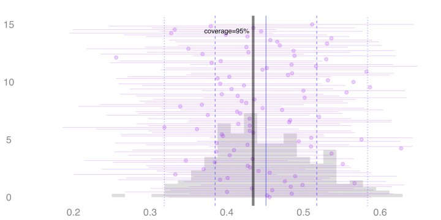
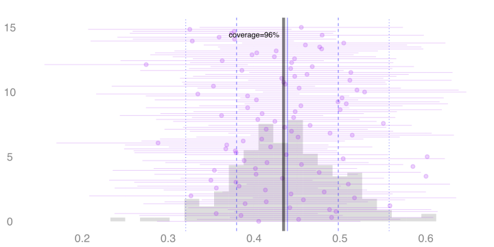

QTM 220: Lecture 13
Misspecification and Statistical Inference
The Resulting Coverage Is Bad

- We can construct 95% confidence intervals the same way in each fake dataset.
- I’ve drawn 100 of these intervals in purple.
- You can see that they sometimes cover zero, but not as often as you’d like.
- 30 / 1000 ≈ 3% of them cover zero. That’s not good.
- If that’s typical of our analysis, people really shouldn’t trust us.
- So why have statisticians gotten away with fitting lines for so long?
- In essence, it’s by pretending we were trying to do something else.
The Impact of Misspecification as Sample Size Grows




- Here we’re seeing the sampling distributions of our two estimators at three sample sizes.
- Left/Right: Difference in Subsample Means / Difference in Values of Fitted Line
- Top/Middle/Bottom: Sample size 50,100,200
- The green line is the actual effect.
- The red one is the effect estimate we get using the population least squares line: 50 × the slope of the red line.
- I’ve drawn 100 confidence intervals based on normal approximation for each estimator.
- We can see that the line-based estimator’s coverage gets increasingly bad as sample size increases.
Examples
\[
\frac{\text{bias}}{\text{se}} = \frac{1}{2} \quad \implies \quad \text{coverage} = 92\%
\]

\[
\frac{\text{bias}}{\text{se}} = 1 \quad \implies \quad \text{coverage} = 83\%
\]
\[
\frac{\text{bias}}{\text{se}} = 2 \quad \implies \quad \text{coverage} = 48\%
\]
People Report This

From Stable Estimation of Survival Causal Effects. Pham et al. arXiv:2310.02278
- This plot shows bias/se for 3 estimators of the effect of a treatment on the probability of survival.
- In particular, they’re estimators of the effect on survival up to time \(t\). \(t\) is on the \(x\)-axis.
- Q. For small \(t\), all 3 estimators are doing ok. When does the red one’s coverage drop below 92%?
- Q. What can we say about the coverage of the blue one and the green one?
- A. The red one’s coverage drops below 92% after \(t=12\). That’s where bias/se starts to exceed 1/2.
- A. Blue and green have bias/se close to or below 1/2 for all times \(t\). So their coverage is roughly 92% or higher for all times \(t\).
Be Careful Using Misspecified Models

- You might have an unproblematic level of bias in a small study.
- That same amount of bias can be a big problem in a larger one.
- In our gym-subsidy example, a line was pretty badly misspecified.
- That means we have to go pretty small to get an unproblematic level of bias.
- Here are the coverage rates at sample sizes 10, 40, and 160.
- We include two versions.
- An approximation calculated using our formula.
- The actual coverage based on simulation.
- These differ a bit when our simplifying assumptions aren’t roughly true.
- e.g. accuracy of the normal approximation to the sampling distribution.
- This is a bigger problem in small samples than in large ones.
\[ \small{ \begin{array}{c|ccccc} n & \text{bias} & \text{se} & \frac{\text{bias}}{\text{se}} & \text{calculated coverage} & \text{actual coverage} \\ \hline 10 & 1.07 & 1.60 & 0.67 & 90\% & 84\% \\ 40 & 1.07 & 0.74 & 1.44 & 70\% & 66\% \\ 160 & 1.07 & 0.35 & 3.03 & 14\% & 13\% \\ \end{array} } \]
It’s Best to Use a Model That’s Not Misspecified